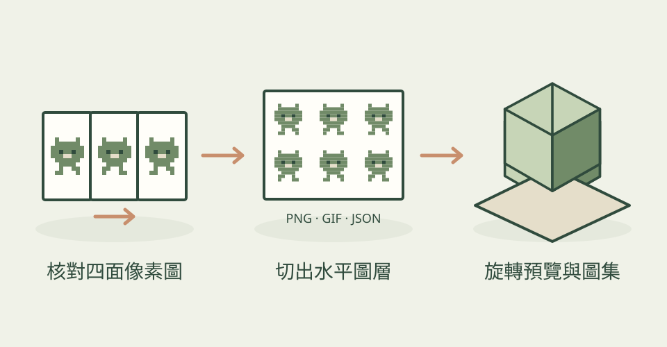

想讓像素賽車轉彎，又不想逐一畫完所有角度？Daniel White 的 Skill 會引導助手準備四個正交視角，再切成一層層薄片，由下往上堆疊繪製。旋轉的是這些薄片，因此看來立體，也能保持清楚的像素風格。
它怎麼幫忙
先核對四面圖的長寬高與朝向，再用 Python 的視覺外殼交集切出圖層，打開檢查圖觀察四個角度與爆炸圖。隨附獨立網頁可看轉台、場景、切片，以及駕駛、風動、碎裂、日夜和雨雪效果；另可匯出十六方向 PNG 圖集。這些是作者文件所列能力，本站未執行。
三步驟看懂這個技能

四面圖的輪廓交集切成薄片，再堆疊旋轉；本站功能示意，非作者成果。
功能示意・本站繪製 放大查看可以這樣開口
這是一個可依需求修改的委託範例。
做一台可轉彎的像素咖啡攤車：先畫車頂、左側、車頭與車尾，再檢查招牌在轉到背面時是否消失，最後匯出十六方向 PNG 放入自己的俯視遊戲。這是本站需求範例。
適合什麼工作
適合像素美術、獨立遊戲開發者，以及想做可旋轉小場景的網頁創作者。
開始之前
- 準備工具
- Python 3、Pillow、NumPy，以及能讀寫圖片與程式的 AI 助手；網頁預覽用一般瀏覽器。可自己提供四面圖，或讓助手用 Python 畫圖，生圖服務非必要。npx 安裝路線另需 Node 22.20+；本文未安裝。接 Godot、Unity 或 Phaser 時仍需依既有專案整合。
- 使用成本
- 儲存庫程式與文件採 MIT；本機切片沒有必付生成 API，AI 助手額度、製圖與引擎成本依自己的工具計算。選用生圖工具才另計費。
- 交付內容
- 水平切片 PNG、檢查圖、可獨立開啟的 HTML 檢視器、可選法線／發光遮罩及十六方向 PNG 圖集。
- 先留意
- 2026-11-23 首次收錄；儲存庫建立於 2026-11-20，不是今天發布。本次核實 493 星。這是四面輪廓推算出的假 3D，不是完整網格重建；四面都看不到的凹洞會填實，需手修。細桿至少兩像素寬，同一套圖要一致比例。作者效能數據未由本站實測，亦不保證直接適用所有引擎。
最近的觀察
2026-11-25：補強最終觀看尺寸與動作檢查：以手機寬度看主體朝向與接觸點，先畫清楚噴嘴、鉸鏈等功能部位，再讓噴氣、灰塵與物件受力一致。例如像素太空船轉向後，已噴出的尾流留在原來路徑，回拉時間軸也不亂跳。這是製作規範加強，沒有新增自動物理引擎；沿用 Python／Pillow／NumPy，選用生成服務才另計費。
作者與來源
本文依作者公開說明整理，沒有實際執行這個專案。功能插圖由本站繪製，原作者範例另行標示；並非本站執行技能的測試結果。GitHub 星數為專案總量，觀察時間為 2026年11月25日 08:30（台北時間）。
與前次快照相比增加 80 星；這不是 GitHub Trending 排名。